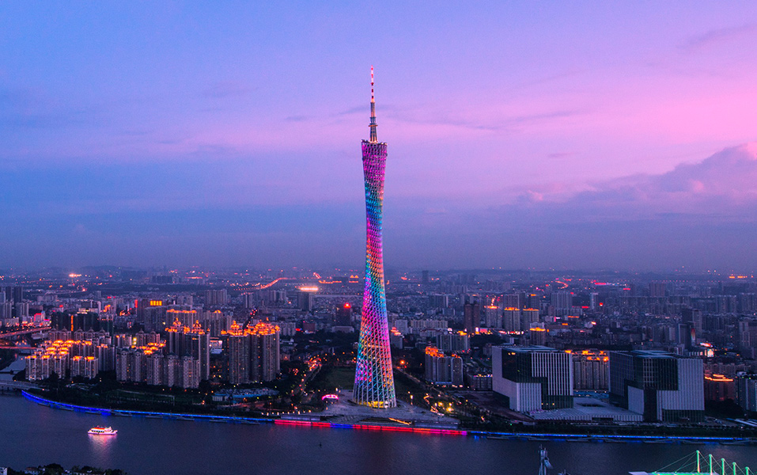
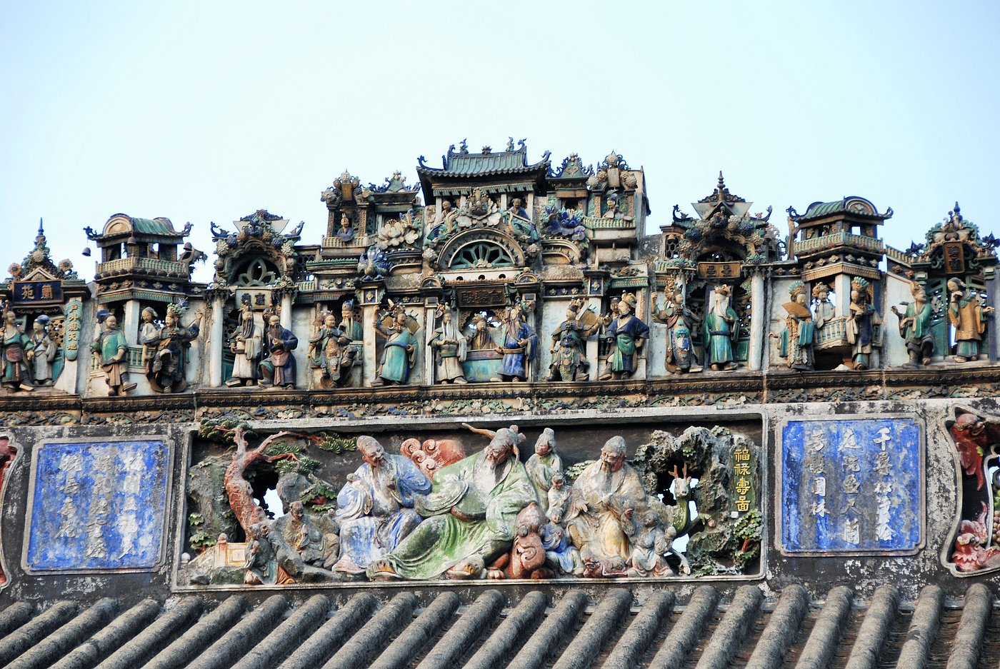
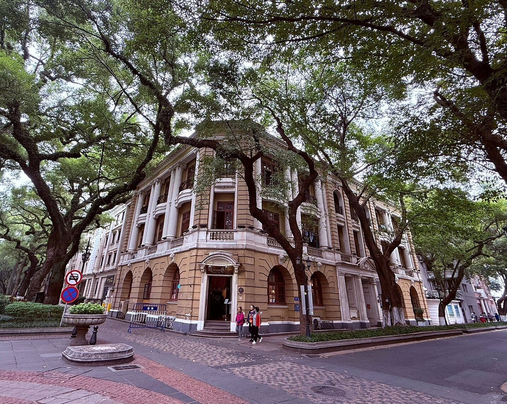

The Canton Tower is one of the most iconic landmarks in Guangzhou, standing at 604 meters tall. It is famous for its unique twisting design and modern architecture. Visitors can enjoy panoramic city views from the observation deck, experience thrilling skywalk activities, or dine in a rotating restaurant. At night, the tower lights up beautifully, representing the modern spirit of Guangzhou.

Built in 1894, the Chen Clan Ancestral Hall is a masterpiece of traditional Cantonese architecture. It was used as both a family temple and an academy for students. The building is famous for its detailed wood carvings, stone carvings, and decorative arts, reflecting the rich cultural heritage of Lingnan.

Shamian Island is a peaceful historic area known for its European-style buildings and tree-lined streets. It was once a foreign concession, giving it a unique cultural blend. Today, it is a popular spot for walking, photography, and enjoying a quiet atmosphere away from the busy city.